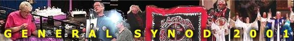

                <link rel="stylesheet" href="https://generalsynod.anglican.ca/defaults.html" type="text/css"></link>

                <link rel="stylesheet" href="https://generalsynod.anglican.ca/defaults_nn4.html" type="text/css"></link>
                <style type="text/css">
                        <!--
                        @import url("https://generalsynod.anglican.ca/extras.css");
                        //-->
                </style>
<HTML>
<!-- Added by HTTrack --><meta http-equiv="content-type" content="text/html;charset=ISO-8859-1"><!-- /Added by HTTrack -->
<HEAD>
<TITLE>General Synod 2001</TITLE>
<STYLE type="text/css">
    <!--
    h1 { font: bold 32pt/36pt Charter, Garamond, serif }
    h2 { font: bold 28pt/30pt Charter, Garamond, serif }
    h3 { font: bold 20pt/22pt Charter, Garamond, serif }
    p.resNum { font: italic 14pt/16pt sans-serif }
    p.resSubj { font: bold 22pt/24pt Charter, Garamond, serif }
    p.mover { font: italic 14pt/16pt Charter, Garamond, serif }
    p.action { font: bold 14pt/16pt sans-serif }
    span.res { font: bold 18pt/20pt Charter, Garamond, serif }
    -->
</STYLE>

</HEAD>
<BODY BGCOLOR="#FFFFFF">

<table align="center" width="600">
  <tr>
    <td colspan="2"></td>
  </tr>
  <tr>
    <td valign="top">
    	<table width="125">
        	<tr>
		    <td align="center" width="125">
    			<A HREF="https://anglican.ca/"></A>	        	<br>
	        	<A HREF="https://www.elcic.ca/"></A>		    	<br>    	
        				    </td>
		</tr>
  		<tr>
		    <td>
                    	<A HREF="news/index.html"></A><br>
<font width size="-1">
<a href="news/webcast/index.html">web broadcast<BR>
</a><a href="news/index.html">anglican.ca news<BR>
</a><a href="news/daily/index.html">daily report<BR>
</a><a href="news/gst/index.html">Gen. Synod Times<BR>
</a><a href="news/mm.html"><EM>Ministry</EM>Matters<BR>
</a><a href="news/aj.html">Anglican Journal<BR>
</a><a href="news/media/index.html">media info<BR>
</a></font>
<br>		    </td>
                </tr>
  		<tr>
                    <td>
                    	<A HREF="ginfo/index.html"></A><br>
<font width size="-1">
<a href="ginfo/bg.html">background<BR>
</a><a href="ginfo/logo.html">GS2001 logo<BR>
</a><a href="https://generalsynod.anglican.ca/ministry/rs/index.html">residential schools<BR>
</a><a href="https://www.anglican.ca/about/inchurch/waterloo_revised_annotated.html">Waterloo Declaration<BR>
</a><a href="ginfo/people.html">People of synod<BR>
</a><a href="ginfo/structure.html">structure<BR>
</a><a href="ginfo/glossary.html">glossary<BR>
</a><a href="https://generalsynod.anglican.ca/gs98/index.html">Synod 98 archive<BR>
</a></font>
<br>		    </td>
		</tr>
		    <td>
                    	<A HREF="einfo/index.html"></A><br>
<font width size="-1">
<a href="news/daily/index.html">daily report<BR>
</a><a href="einfo/officers.html">officers<BR>
</a><a href="einfo/officers.html#cte">sessional committees<BR>
</a><a href="https://generalsynod.anglican.ca/directory/committee_email.html">standing committees<BR>
</a><a href="einfo/contact.html">contacts<BR>
</a><a href="https://generalsynod.anglican.ca/majordomo/gs2001.html">discussion group<BR>
</a><a href="einfo/worship.html">worship<BR>
</a></font>
<br>                    </td>
                </tr>
		<tr>
		    <td>
		    	<A HREF="rr/index.html"></A><br>
<font width size="-1">
<a href="rr/agenda.html">agenda<BR>
</a><a href="rr/reports/index.html">reports<BR>
</a><a href="rr/resolutions/index.html">resolutions<BR>
</a><a href="rr/memorials/index.html">memorials<BR>
</a><a href="rr/presentations/index.html">presentations<BR>
</a></font>
<br>		    </td>
		</tr>
                <tr>
                    <td>
		    	<br>
<font width size="-1">
<a href="ack.html"><EM>acknowledgements</EM><BR>
</a><a href="acc.html"><EM>accolades</EM><BR>
</a></font>
<br>                    </td>
                </tr>
	</table>
    </td>
    <td valign="top">
<H1>Webcast a success</H1>
<h2>Reaction overwhelmingly positive</h2>

<p>
        <font size="-1"><B>LEANNE LARMONDIN</B>
<br>
WEB MANAGER</font>
<br>
<hr align="left" size="1">
<FONT SIZE="-1"><B>TORONTO, Ont., July 13, 2001</B></FONT> -

<!-- gs2001-Webcast a success -->

<!-- Reaction overwhelmingly positive -->

<!-- While the meeting of General Synod was limited to about 400 members and visitors who packed the hall at the University of Waterloo, hundreds, perhaps thousands more people virtually visited synod via a broadcast on the World Wide Web. -->     

<!-- Leanne Larmondin -->

<!-- Website Manager -->

<!-- TORONTO, Ont., July 13, 2001-->


While the meeting of General Synod was limited to about 400 members and visitors who packed the hall at the University of Waterloo, hundreds, perhaps thousands more people virtually visited synod via a broadcast on the World Wide Web.

<BR>


&nbsp;&nbsp;&nbsp;&nbsp;&nbsp;

Anglican Video, the national church's video department, has traditionally provided a broadcast parts of synod on a national religious television network, but the church's national council voted against the broadcasts this time to save money. The video crew was still on hand, however, to provide cameras and a large screen for synod members in the cavernous hall. 

<BR>&nbsp;&nbsp;&nbsp;&nbsp;&nbsp;

It was that video feed which web visitors watched.

<BR>&nbsp;&nbsp;&nbsp;&nbsp;&nbsp;

Despite the occasional glitch, reaction was overwhelmingly positive. Former synod members and even one-time General Synod staff e-mailed website staff thanking them for the opportunity to share in the proceedings, which many felt were especially historic, considering the church's vote for full communion with the Lutherans, the participation of indigenous partners and the possibility that it would be the last meeting of the national church in its current incarnation.

<BR>&nbsp;&nbsp;&nbsp;&nbsp;&nbsp;

The father of one youth member e-mailed website staff his gratitude that he had been able to sit at his computer in Winnipeg and watch his son do a reading during night prayers in a hall in Waterloo, Ont.

<BR>&nbsp;&nbsp;&nbsp;&nbsp;&nbsp;

There were more than 5,800 connections made to the webcast over the week; most of those (nearly 4,800) were to the live broadcast. 

<BR>&nbsp;&nbsp;&nbsp;&nbsp;&nbsp;

(It is impossible to tell how many different people visited the webcast; the statistics only reveal the number of connections or visits.)

<BR>&nbsp;&nbsp;&nbsp;&nbsp;&nbsp;

In addition to the live broadcast, the website also archived many moments of synod so that visitors could access them later. Included in those archived items is the historic vote for full communion, the Primate's opening address and closing sermon at Synod and Keewatin Bishop Gordon Beardy's public forgiveness of the church for its role in the residential school system.

<BR>&nbsp;&nbsp;&nbsp;&nbsp;&nbsp;

About 1,000 connections were made to the archived video sections.

<BR>&nbsp;&nbsp;&nbsp;&nbsp;&nbsp;

Not surprisingly, the technology did not always work as planned. 

<BR>&nbsp;&nbsp;&nbsp;&nbsp;&nbsp;

The prolocutor routinely welcomed web watchers each evening, suggesting they e-mail the website staff with feedback. The first evening Archdeacon Rodney Andrews welcomed cyber-visitors and thanked the diocese of Montreal for its financial sponsorship of the webcast, the webcast was momentarily dead. The welcome was only heard by those in the plenary hall. 

<BR>&nbsp;&nbsp;&nbsp;&nbsp;&nbsp;

A similar glitch also provided some panic when, in what was described by some synod watchers as one of the pivotal moments of the synod, Bishop Beardy, a former residential schools student, forgave the church. The webcast was lost irretrievably for the day, only moments before the bishop gave his absolution. The video crew, however, provided their archived video to the website the next morning and the moment was available on the website less than a day after the event.

<BR>&nbsp;&nbsp;&nbsp;&nbsp;&nbsp;

The webcast, which cost less than $2,000, was funded by the diocese of Montreal. Diocesan representatives said they were happy to help fund the national church's first webcast, particularly considering the financial troubles at the national level.  Eileen Scully laughed out loud when she saw the headline of the advance General Synod story about the joint service to be held with the Lutherans. "Joint synod service: on ice, with a twist", read the headline.

<P>

Links:


<UL>

	<li><A HREF="https://anglican.ca/news/online/news.html?newsItem=2001-06-21_ll.news">Diocese helps synod go digital</A> -- anglican.ca news story

	<li><A HREF="https://anglican.ca/gs2001/news/webcast/">Archives of synod highlights</A>

</UL>


While the meeting of General Synod was limited to about 400 members and visitors who packed the hall at the University of Waterloo, hundreds, perhaps thousands more people virtually visited synod via a broadcast on the World Wide Web.

<BR>



&nbsp;&nbsp;&nbsp;&nbsp;&nbsp;

Anglican Video, the national church's video department, has traditionally provided a broadcast parts of synod on a national religious television network, but the church's national council voted against the broadcasts this time to save money. The video crew was still on hand, however, to provide cameras and a large screen for synod members in the cavernous hall. 

<BR>&nbsp;&nbsp;&nbsp;&nbsp;&nbsp;

It was that video feed which web visitors watched.

<BR>&nbsp;&nbsp;&nbsp;&nbsp;&nbsp;

Despite the occasional glitch, reaction was overwhelmingly positive. Former synod members and even one-time General Synod staff e-mailed website staff thanking them for the opportunity to share in the proceedings, which many felt were especially historic, considering the church's vote for full communion with the Lutherans, the participation of indigenous partners and the possibility that it would be the last meeting of the national church in its current incarnation.

<BR>&nbsp;&nbsp;&nbsp;&nbsp;&nbsp;

The father of one youth member e-mailed website staff his gratitude that he had been able to sit at his computer in Winnipeg and watch his son do a reading during night prayers in a hall in Waterloo, Ont.

<BR>&nbsp;&nbsp;&nbsp;&nbsp;&nbsp;

There were more than 5,800 connections made to the webcast over the week; most of those (nearly 4,800) were to the live broadcast. 

<BR>&nbsp;&nbsp;&nbsp;&nbsp;&nbsp;

(It is impossible to tell how many different people visited the webcast; the statistics only reveal the number of connections or visits.)

<BR>&nbsp;&nbsp;&nbsp;&nbsp;&nbsp;

In addition to the live broadcast, the website also archived many moments of synod so that visitors could access them later. Included in those archived items is the historic vote for full communion, the Primate's opening address and closing sermon at Synod and Keewatin Bishop Gordon Beardy's public forgiveness of the church for its role in the residential school system.

<BR>&nbsp;&nbsp;&nbsp;&nbsp;&nbsp;

About 1,000 connections were made to the archived video sections.

<BR>&nbsp;&nbsp;&nbsp;&nbsp;&nbsp;

Not surprisingly, the technology did not always work as planned. 

<BR>&nbsp;&nbsp;&nbsp;&nbsp;&nbsp;

The prolocutor routinely welcomed web watchers each evening, suggesting they e-mail the website staff with feedback. The first evening Archdeacon Rodney Andrews welcomed cyber-visitors and thanked the diocese of Montreal for its financial sponsorship of the webcast, the webcast was momentarily dead. The welcome was only heard by those in the plenary hall. 

<BR>&nbsp;&nbsp;&nbsp;&nbsp;&nbsp;

A similar glitch also provided some panic when, in what was described by some synod watchers as one of the pivotal moments of the synod, Bishop Beardy, a former residential schools student, forgave the church. The webcast was lost irretrievably for the day, only moments before the bishop gave his absolution. The video crew, however, provided their archived video to the website the next morning and the moment was available on the website less than a day after the event.

<BR>&nbsp;&nbsp;&nbsp;&nbsp;&nbsp;

The webcast, which cost less than $2,000, was funded by the diocese of Montreal. Diocesan representatives said they were happy to help fund the national church's first webcast, particularly considering the financial troubles at the national level.  Eileen Scully laughed out loud when she saw the headline of the advance General Synod story about the joint service to be held with the Lutherans. "Joint synod service: on ice, with a twist", read the headline.

<P>

Links:


<UL>

	<li><A HREF="https://anglican.ca/news/online/news.html?newsItem=2001-06-21_ll.news">Diocese helps synod go digital</A> -- anglican.ca news story

	<li><A HREF="https://anglican.ca/gs2001/news/webcast/">Archives of synod highlights</A>

</UL></TD></TR></TABLE>
<br clear="all">
<HR align="left" SIZE="4" WIDTH="500">
				<TABLE><TR><TD ALIGN="CENTER">
<FONT SIZE="-1">
<a href="https://generalsynod.anglican.ca/index.html">
	[ACC Home]
</a>
<a href="https://www.anglican.ca/news">
	[News]
</a>
<a href="https://generalsynod.anglican.ca/ministries/index.html">
	[Ministries]
</a>
<a href="https://generalsynod.anglican.ca/resources.html">
	[Resources]
</a>
<a href="https://generalsynod.anglican.ca/directories/index.html">
	[Directories]
</a>
&nbsp;&nbsp;&nbsp;
<a href="https://generalsynod.anglican.ca/sitemap.html">
	[Sitemap]
</a>
<a href="https://generalsynod.anglican.ca/htdig/search.html">
	[search]
</a>
</font>
                                </TD></TR><TR><TD>
                    		<p class="disclaimer">
                         		<span class="black">These pages &copy;1998-2007 the General Synod of the Anglican Church of Canada</span>
                         		<br>
                          		 While this is the official site of the Anglican Church of Canada, the material published here does not necessarily reflect official positions of the General Synod or any other body of the church. In cases where an official position is represented, that is indicated on the page or in the text in question. 
                    		</p>
                    		<p class="disclaimer">
                                	Contact: <a href="https://generalsynod.anglican.ca/ministries/departments/function_email20a7.html?id=info">for general inquiries and requests</a>; <a href="https://generalsynod.anglican.ca/ministries/departments/function_email56bb.html?id=webmanager">for Web site corrections</a>
                    		</p>
             			</TD></TR></TABLE>
             			<A NAME="bottom">&nbsp;</A>

</TD></TR></TABLE>
</table>
	<script src="../gs2001-loc/anglican.ca/includes/jumptop.js">
//Jump To Top Link Script
//Copyright Dynamicdrive.com
//Visit https://www.dynamicdrive.com for this script, and TOS
</script>
<script>
  (function(i,s,o,g,r,a,m){i['GoogleAnalyticsObject']=r;i[r]=i[r]||function(){
  (i[r].q=i[r].q||[]).push(arguments)},i[r].l=1*new Date();a=s.createElement(o),
  m=s.getElementsByTagName(o)[0];a.async=1;a.src=g;m.parentNode.insertBefore(a,m)
  })(window,document,'script','//www.google-analytics.com/analytics.js','ga');

  ga('create', 'UA-191686-3', 'auto');
  ga('send', 'pageview');

</script>
</BODY>
<!-- Added by HTTrack --><meta http-equiv="content-type" content="text/html;charset=ISO-8859-1"><!-- /Added by HTTrack -->
</HTML>